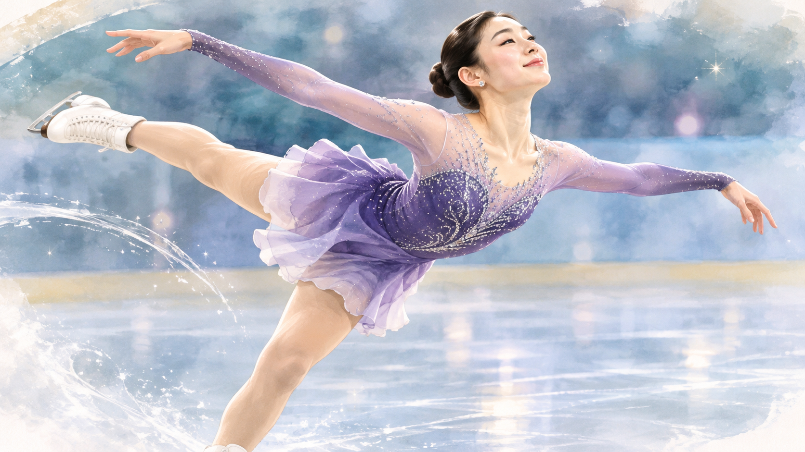

The Power to Keep Going
읽고 · 말하고 · 생각하는 영어

학습 안내
The Power to Keep Going
끝까지 계속하는 힘
핵심 단어 · Key Vocabulary
stamina
체력, 지구력
keep up with
~을 따라가다
physically strong
신체적으로 강한
difficulty
어려움
weakness
약점
overcome
극복하다
improve
향상시키다
determination
결단력, 의지
endurance
지구력, 인내력
persistence
끈기
flexibility
유연성
push oneself
자신을 몰아붙이다
effortless
힘들이지 않는
회화 패턴 · Speaking Patterns
I'm not naturally good at ~, but I try to ~.
I'm not naturally good at speaking English, but I try to practice every day.
(나는 타고나기를 영어를 잘하는 편은 아니지만 매일 연습하려고 한다.)
I used to ~, but now I ~.
I used to give up easily, but now I try to keep going.
(나는 예전에는 쉽게 포기했지만 지금은 계속하려고 한다.)
I used to worry about my weaknesses, but now I try to improve them.
(나는 예전에는 나의 약점을 걱정했지만 지금은 그것을 개선하려고 한다.)
본문 읽기 · Reading
The Power to Keep Going
Kim Yuna is one of the greatest figure skaters in history. She won an Olympic gold medal
and achieved many great things. However, her success did not come easily. In an interview
with Yoo Jae-suk, she said that she was not naturally strong in stamina.
Figure skating looks beautiful and effortless, but it requires strength, flexibility, and
endurance. As she got older, it became harder to keep up with younger athletes. She knew
her physical strength was one of her weaknesses, so she trained hard to improve it.
Kim Yuna's story teaches us that success is not always about talent or perfect abilities.
Sometimes, what matters is knowing our weaknesses, working on them, and continuing
even when things are difficult. The power to keep going can make a big difference.
한국어 해석 · Translation
끝까지 계속하는 힘
김연아는 역사상 가장 위대한 피겨스케이터 중 한 명입니다. 그녀는 올림픽 금메달을 따고 많은 훌륭한 성과
를 이루었습니다. 하지만 그녀의 성공은 쉽게 이루어진 것이 아니었습니다. 유재석과의 인터뷰에서 그녀는 타
고난 체력이 좋은 편은 아니었다고 말했습니다.
피겨스케이팅은 아름답고 힘들이지 않는 것처럼 보이지만, 힘과 유연성, 지구력이 필요한 운동입니다. 나이가
들면서 어린 선수들을 따라가는 것이 더 어려워졌습니다. 그녀는 자신의 체력이 약점 중 하나라는 것을 알고
그것을 향상시키기 위해 열심히 훈련했습니다.
김연아의 이야기는 성공이 항상 재능이나 완벽한 능력에 달려 있는 것은 아니라는 것을 보여줍니다. 때로는
자신의 약점을 알고 그것을 개선하기 위해 노력하며, 어려울 때에도 계속 나아가는 것이 중요합니다. 끝까지
계속하는 힘이 큰 차이를 만들 수 있습니다.
토론 질문 · Discussion Questions
Do you think talent or persistence is more important for success? Why?
성공에 재능과 끈기 중 어느 것이 더 중요하다고 생각하나요? 왜 그런가요?
Have you ever continued something even when you wanted to give up?
포기하고 싶었지만 끝까지 계속했던 일이 있나요?
Why do people sometimes give up too easily?
사람들은 왜 때때로 너무 쉽게 포기할까요?
What is more important: being strong or being able to keep going?
강한 사람이 되는 것과 계속 나아갈 수 있는 것 중 무엇이 더 중요할까요?
예시 답변 · Sample Answers
I think persistence is more important than talent. Talent can give us a good start, but persistence helps us continue when things become difficult. If we keep trying, we can improve over time.
(저는 끈기가 재능보다 더 중요하다고 생각합니다. 재능은 좋은 출발을 하게 해줄 수 있지만, 끈기는 일이 어려워졌을 때 계속 나 아가게 해줍니다. 계속 노력한다면 시간이 지나면서 발전할 수 있습니다.)
Yes, I have. There have been times when I wanted to give up because I was tired or disappointed. But I took a short break and tried again. Looking back, I'm glad I didn't give up.
(예, 있습니다. 너무 지치거나 실망해서 포기하고 싶었던 때가 있었습니다. 하지만 잠시 쉬었다가 다시 해보았습니다. 돌이켜보 면 포기하지 않은 것이 다행이라고 생각합니다.)
I think people sometimes give up because they expect quick results. When they don't see progress, they become frustrated. We need to remember that real progress takes time.
(사람들은 때때로 빠른 결과를 기대하기 때문에 포기한다고 생각합니다. 발전하는 것이 보이지 않으면 좌절하게 됩니다. 진정한 발전에는 시간이 걸린다는 것을 기억해야 합니다.)
I think being able to keep going is more important. We don't always have to be the strongest person. Sometimes, the person who keeps going is the one who finally succeeds.
(저는 계속 나아갈 수 있는 것이 더 중요하다고 생각합니다. 우리가 항상 가장 강한 사람일 필요는 없습니다. 때로는 계속 나아가 는 사람이 결국 성공합니다.)
오늘의 메시지 · Today’s Message
“Our greatest glory is not in never falling, but in rising every time we fall.” - Oliver Goldsmith, The Citizen of the World (1762)
우리의 가장 큰 영광은 한 번도 넘어지지 않는 것이 아니라, 넘어질 때마다 다시 일어나는 데 있다.
영작 연습 · Write It Yourself
다음 단어를 사용하여 영작해보세요.
1. keep up with
→ _________________________________________________
2. persistence
→ _________________________________________________
(이 글의 핵심 생각은 무엇인가요? 아래에 한 문장으로 써 보세요.)
→